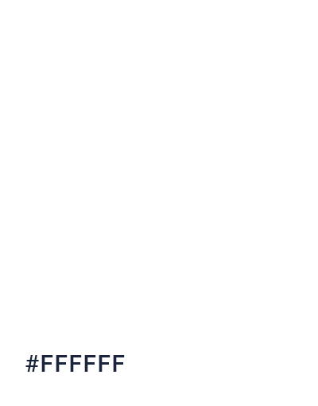
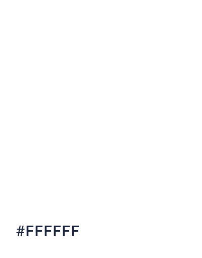

Turning Flatland into an online reading experience ⸺
UI/UX, branding
2018/1
For my capstone project in university, I decided to bring one of my favorite books into the digital realm, using resources such as animation and interesting interactions as a way to rekindle interest of the younger folk. The project was developed individually over the course of a year with advice from a mentor at university.


 
